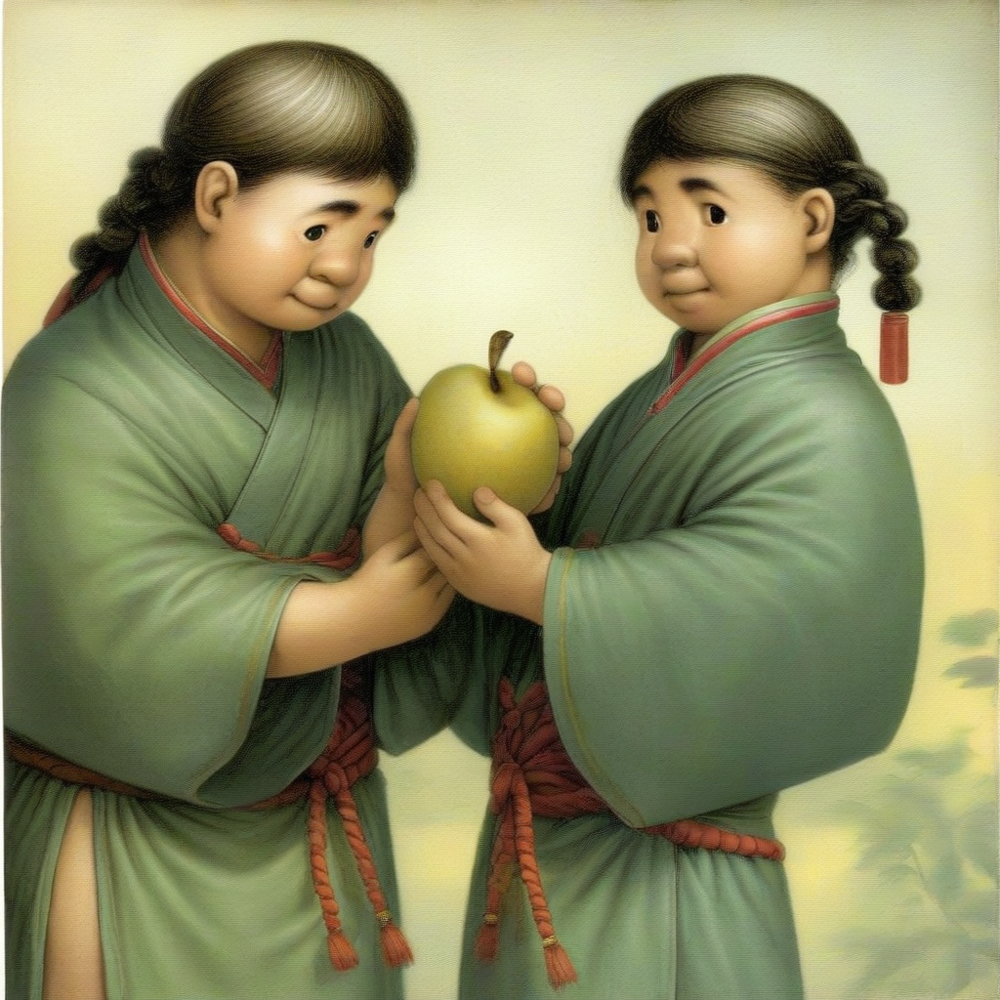

孔融让梨 (kǒng róng ràng lí)
文本描述
一个古代小孩孔融，温和地把最大的梨让给兄长。
他微笑着拿起最小的梨，背景是一个传统中式庭院。
画面体现了谦逊礼让的主题。
生成图片

生成图片过程简述
通过 Liblib AI 平台，使用古风插画模型文生图模型，我输入成语的描述内容（小孩、男孩、中国古代、梨等），设置分辨率为 1024x1024，调整风格为柔和暖色调，最终生成了这幅温馨舒适的画面。